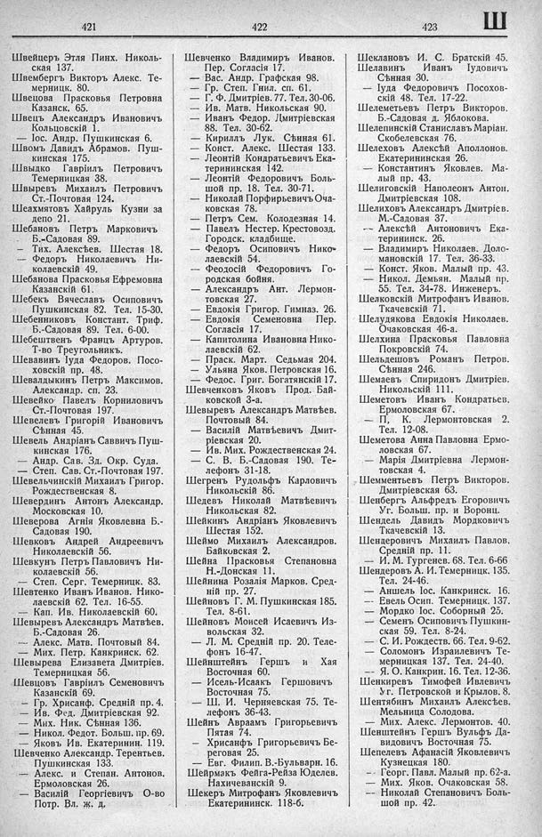

Лист источника 491
Скан

Распознанный текст
421
Швейцеръ Этля Пинх. Николь-
ская 137.
Швембергъ Викторъ Алекс. Те-
мерницк. 80.
Швецова Прасковья Петровна
Казанск. 65.
Швецъ Александръ Ивановичъ
Кольцовскій 1.
— Іос. Андр. Пушкинская 6.
Швомъ Давидъ Абрамов. Пуш-
кинская 175.
Швыдко Гавріилъ Петровичъ
Темерницкая 38.
Швыревъ Михаилъ Петровичъ
Ст.-Почтовая 124.
Шеахмятовъ Хайруль Кузни за
депо 21.
Шебановъ Петръ Марковичъ
Б.-Садовая 89.
— Тих. Алексѣев. Шестая 18.
— Федоръ Николаевичъ Ни-
колаевскій 49.
Шебанова Прасковья Ефремовна
Казанскій 61.
Шебекъ Вячеславъ Осиповичъ
Пушкинская 82. Тел. 15-30.
Шебенниковъ Констант. Триф.
Б.-Садовая 89. Тел. 6-00.
Шебештвенъ Францъ Артуров.
Т-во Треугольникъ.
Шевавинъ Іуда Федоров. Посо-
ховскій пр. 48.
Шевалдыкинъ Петръ Максимов.
Александр. сп. 23.
Шевейко Павелъ Корниловичъ
Ст.-Почтовая 197.
Шевелевъ Григорій Ивановичъ
Сѣнная 45.
Шевель Андріанъ Саввичъ Пуш-
кинская 176.
— Андр. Сав. Зд. Окр. Суда.
— Степ. Сав. Ст.-Почтовая 197.
Шевельчинскій Михаилъ Григор.
Рождественская 8.
Шевердинъ Антонъ Александр.
Московская 10.
Шеверова Агнія Яковлевна Б.-
Садовая 190.
Шевковъ Андрей Андреевичъ
Николаевскій 56.
Шевкунъ Петръ Павловичъ Ни-
колаевскій 56.
— Степ. Серг. Темерницк. 83.
Шевтенко Иванъ Иванов. Нико-
лаевскій 62. Тел. 16-55.
— Кап. Ив. Николаевскій 60.
Шевыревъ Александръ Матвѣев.
Б.-Садовая 26.
— Алекс. Матв. Почтовый 84.
— Мих. Петр. Канкринск. 62.
Шевырева Елизавета Дмитріев.
Темерницкая 56.
Шевцовъ Гавріилъ Семеновичъ
Казанскій 69.
— Гр. Хрисанф. Средній пр. 4.
— Ив. Фед. Дмитріевская 92.
— Мих. Ник. Сѣнная 136.
— Никол. Федот. Больш. пр. 69.
— Яковъ Ив. Екатеринин. 119.
Шевченко Александр. Терентьев.
Пушкинская 133.
— Алекс. и Степан. Антонов.
Ермоловская 26.
— Василій Георгіевичъ О-во
Потр. Вл. ж. д,
422
Шевченко Владимиръ Иванов.
Пер. Согласія 17.
— Вас. Андр. Графская 98.
— Гр. Степ. Гнил. сп. 61.
— Г. Ф. Дмитріев. 77. Тел. 30-06.
— Ив. Матв. Никольская 90.
— Иванъ Федор. Дмитріевская
88. Тел. 30-62.
— Кириллъ Лук. Сѣнная 61.
— Конст. Алекс. Шестая 133.
— Леонтій Кондратьевичъ Ека-
терининская 142.
— Леонтій Федоровичъ Боль-
шой пр. 18. Тел. 30-71.
— Николай Порфирьевичъ Оча-
ковская 78.
— Петръ Сем. Колодезная 14.
— Павелъ Нестер. Крестовозд.
Городск. кладбище.
— Федоръ Осиповичъ Нико-
лаевскій 54.
— Феодосій Федоровичъ Го-
родская бойня.
— Александръ Ант. Лермон-
товская 27.
— Евдокія Григор. Гимназ. 26.
— Евдокія Семеновна Пер.
Согласія 17.
— Капитолина Ивановна Нико-
лаевскій 62.
— Праск. Март. Седьмая 204.
— Ульяна Яков. Петровская 16.
— Федос. Григ. Богатянскій 17.
Шевченковъ Яковъ Прод. Бай-
ковской 3-а.
Шевыревъ Александръ Матвѣев.
Почтовый 84.
— Василій Матвѣевичъ Дмит-
ріевская 20.
— Ив. Мих. Рождественская 24.
— С. В. Б.-Садовая 190. Те-
лефонъ 31-18.
Шегренъ Рудольфъ Карловичъ
Никольскій 86.
Шедевъ Николай Матвѣевичъ
Никольская 82.
Шейкинъ Андріанъ Яковлевичъ
Шестая 152.
Шеймо Михаилъ Александров.
Байковская 2.
Шейна Прасковья Степановна
Н.-Донская 11.
Шейнина Розалія Марков. Сред-
ній пр. 27.
Шейновъ Г. М. Пушкинская 185.
Тел. 8-61.
Шейновъ Моисей Исаевичъ Из-
вольская 32.
— Л. М. Средній пр. 20. Теле-
фонъ 16-47.
Шейнштейнъ Гершъ и Хая
Восточная 60.
— Исель-Исаакъ Гершовичъ
Восточная 75.
— Ш. И. Черняевская 75. Те-
лефонъ 36-43.
Шейнъ Авраамъ Григорьевичъ
Пятая 74.
— Хрисанфъ Григорьевичъ Бе-
реговая 25.
— Евг. Филип. В.-Бульварн. 16.
Шейрмакъ Фейга-Рейза Юделев.
Нахичеванскій 9.
Шекеръ Митрофанъ Яковлевичъ
Екатерининск. 118-б.
423
Ш
Шеклановъ И. С. Братскій 45.
Шелавинъ Иванъ Іудовичъ
Сѣнная 30.
— Іуда Федоровичъ Посохов-
скій 48. Тел. 17-22.
Шелеметьевъ Петръ Викторов.
Б.-Садовая д. Яблокова.
Шелепинскій Станиславъ Маріан.
Скобелевская 76.
Шелеховъ Алексѣй Аполлонов.
Екатерининская 26.
— Константинъ Яковлев. Ма-
лый пр. 43.
Шелиговскій Наполеонъ Антон.
Дмитріевская 108.
Шелиховъ Александръ Дмитріев.
М.-Садовая 37.
— Алексѣй Антоновичъ Ека-
терининск. 26.
— Владимиръ Николаев. Доло-
мановскій 17. Тел. 36-33.
— Конст. Яков. Малый пр. 43.
— Никол. Демьян. Малый пр.
55. Тел. 34-78. Инженеръ.
Шелковскій Митрофанъ Иванов.
Ткачевскій 71.
Шелудякова Евдокія Николаев.
Очаковская 46-а.
Шелхина Прасковья Павловна
Покровскій 74.
Шельдешовъ Романъ Петров.
Сѣнная 246.
Шемаевъ Спиридонъ Дмитріев.
Никольскій 111.
Шеметовъ Иванъ Кондратьев.
Ермоловская 67.
— П. К. Лермонтовская 2.
Тел. 12-08.
Шеметова Анна Павловна Ермо-
ловская 67.
— Марія Дмитріевна Лермон-
товская 4.
Шемментьевъ Петръ Викторов.
Дмитріевская 63.
Шенбергъ Альфредъ Егоровичъ
Уг. Больш. пр. и Воронц.
Шендель Давидъ Мордковичъ
Ткачевскій 13.
Шендеровичъ Михаилъ Павлов.
Средній пр. 11.
— И. М. Тургенев. 68. Тел. 6-66
Шендеровъ А. И. Темерницк. 135.
Тел. 24-46.
— Аншель Іос. Канкринск. 16.
— Евель Осип. Темерницк. 137.
— Мордко Іос. Соборный 25.
— Семенъ Осиповичъ Пушкин-
ская 59. Тел. 8-24.
— С. И. Рождеств. 66. Тел. 9-62.
— Соломонъ Израилевичъ Те-
мерницкая 137. Тел. 24-40.
— Я. О. Канкрин. 16. Тел. 12-36.
Шенкиревъ Тимофей Ивлевичъ
Уг. Петровской и Крылов. 8.
Шентябинъ Михаилъ Алексѣев.
Мельница Солодова.
— Мих. Алекс. Лермонтов. 40.
Шенштейнъ Гершъ Вульфъ Да-
видовичъ Восточная 75.
Шепелевъ Афанасій Яковлевичъ
Кузнецкая 180.
— Георг. Павл. Малый пр. 62-а.
— Мих. Яков. Очаковская 58.
— Николай Степановичъ Боль-
шой пр. 42.